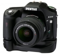

Pentax 于2008年1月24日推出具有防尘防水功能的数码单反相机：K200D。K200D采用与K100D相同的APS-C画幅感应器，有效像素达到了1020万像素的CCD传感器，尺寸为23.5 × 15.7mm，焦距转换系数仍然为1.5倍。配置23万像素2.7英寸超大屏幕液晶显示器。采用新开发的防抖动SR系统，能有效的检查出最轻微的相机抖动并进行相应补偿，配置了DR除尘系统，由于低通滤色器的前表面采用了SP涂层，从而使灰尘和其它异物难以粘附到滤色器上。